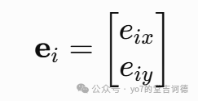
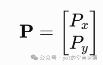
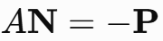
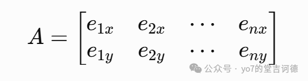
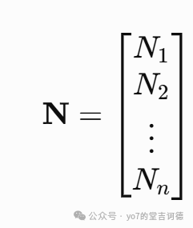

/** 项目：工厂水箱补水方案评估器* 目标：判断定流量供水工况能否满足用水，估计泵运行时间、用电和费用。cpp -> 预处理 -> 编译/汇编 -> 目标文件 -> 链接 -> 可执行程序。* //是单行注释；本段是多行注释；#include是预处理指令，不加分号。*/// std为标准库名字空间。也可以明确写std::cout。using namespace std;// 1. 固定工程参数：有名字的常量，比散落的数字更容易维护const char TANK_ID = 'A'; // 字符常量，单引号，区分大小写const double LENGTH_M = 2.0; //const 表示变量后面不能修改const double WIDTH_M = 2.0;const double HEIGHT_M = 2.5;const double LITRES_PER_M3 = 1.0e3; // 科学计数法：1000.0，类型doubleconst double START_RATIO = 0.25; // 液位 <= 25% 时启动const double STOP_RATIO = 0.80; // 液位 >= 80% 时停止，形成回差，避免频繁开停const double HIGH_RATIO = 0.95; // 高液位报警线const double PUMP_POWER_KW = 1.5; // 示例额定功率，不随流量变化const double PRICE_PER_KWH = 0.80; // 示例电价（元/kWh），可按实际合同修改const int LOG_INTERVAL_MIN = 30;const int SENSOR_BIAS_MM = 12; // 假设已知传感器零偏：多报12mmconst int ZERO_CORRECTION_MM = -12; // 校准抵消零偏const float SENSOR_GAIN = 1.0f; // float字面量要加f；本例只做零点校准const double EPS = 1e-8; // 仅用于数值判断，不是传感器的实际精度// 枚举：默认从0递增，也可以指定值。不能直接对普通enum做++。enum PumpState { STOPPED, RUNNING, INTERLOCKED = 10 };//8个二进制位分别表示8种情况，多个情况可同时发生。const unsigned int LOW_LEVEL = 1u << 0; // 00000001const unsigned int HIGH_LEVEL = 1u << 1; // 00000010const unsigned int PUMP_FAULT = 1u << 2;const unsigned int SENSOR_FAULT = 1u << 3;const unsigned int NO_RECOVERY = 1u << 4; // 净补水能力<=0，无法提高液位const unsigned int EMPTY_TANK = 1u << 5;const unsigned int ALARM_OVERFLOW = 1u << 6; // 上一分钟发生溢流const unsigned int SHORTAGE = 1u << 7; // 上一分钟需求未完全满足// 辅助函数：按行读取一个有限范围内的数字，错误时重输，EOF时退出。// value是调用者变量的引用，赋值value就改变main里的变量。bool readNumber(const string& prompt, double& value, double low, double high,bool integerOnly = false){while (true) {cout << prompt << " [" << low << ", " << high << "]：";string line;if (!getline(cin, line)) return false; // 输入结束，不能无限重试istringstream input(line);double candidate = 0.0;string extra;// &&短路：只有读入成功，才会继续验证数值。bool valid = static_cast<bool>(input >> candidate) && !(input >> extra)&& isfinite(candidate) && candidate >= low && candidate <= high;if (valid && (!integerOnly || floor(candidate) == candidate)) {value = candidate;return true;}cout << "请输入范围内的" << (integerOnly ? "整数" : "一个数字")<< "，不要附带单位或其他字符。\n";}}// 传感器按1mm分辨率取整，再叠加已知零偏。范围受水箱尺寸约束。int rawLevelMm(double waterLitres, double areaM2){double heightM = waterLitres / (areaM2 * LITRES_PER_M3);return static_cast<int>(heightM * 1000.0 + 0.5) + SENSOR_BIAS_MM;// 这里对非负数加0.5后截断，得到四舍五入后的毫米数。}double measuredRatio(double waterLitres, double areaM2){int raw = rawLevelMm(waterLitres, areaM2);double calibratedMm = (raw + ZERO_CORRECTION_MM) * SENSOR_GAIN;// int与float运算得到float，再赋给double；不是一开始就按double算。return calibratedMm / (HEIGHT_M * 1000.0);}PumpState decidePump(PumpState previous, double levelRatio, bool pumpOK, bool sensorOK){if (!pumpOK || !sensorOK) return INTERLOCKED;if (levelRatio >= STOP_RATIO) return STOPPED;if (levelRatio <= START_RATIO) return RUNNING;// 两条阈值之间保持原状态，叫回差控制。return previous == RUNNING ? RUNNING : STOPPED;}unsigned int getAlarms(double water, double observedRatio, bool pumpOK, bool sensorOK,double pumpFlow, double demand, double overflow, double shortage){unsigned int alarms = 0;if (sensorOK && observedRatio <= START_RATIO) alarms |= LOW_LEVEL;if (sensorOK && observedRatio >= HIGH_RATIO) alarms |= HIGH_LEVEL;if (!pumpOK) alarms |= PUMP_FAULT;if (!sensorOK) alarms |= SENSOR_FAULT;if (pumpFlow <= demand) alarms |= NO_RECOVERY;if (water <= EPS) alarms |= EMPTY_TANK;if (overflow > EPS) alarms |= ALARM_OVERFLOW;if (shortage > EPS) alarms |= SHORTAGE;return alarms;}void printState(PumpState state){cout << (state == RUNNING ? "运行" : state == STOPPED ? "停止" : "联锁");// 条件运算符右结合，等价于a?b:(c?d:e)。}void printAlarms(unsigned int alarms){if (alarms == 0u) cout << "无";if ((alarms & LOW_LEVEL) != 0u) cout << "低液位 ";if ((alarms & HIGH_LEVEL) != 0u) cout << "高液位 ";if ((alarms & PUMP_FAULT) != 0u) cout << "泵故障 ";if ((alarms & SENSOR_FAULT) != 0u) cout << "传感器故障 ";if ((alarms & NO_RECOVERY) != 0u) cout << "净补水能力不足 ";if ((alarms & EMPTY_TANK) != 0u) cout << "空箱 ";if ((alarms & ALARM_OVERFLOW) != 0u) cout << "发生溢流 ";if ((alarms & SHORTAGE) != 0u) cout << "供水缺口 ";}void printLog(int minute, int remaining, double water, double capacity,PumpState nextState, unsigned int alarms, unsigned int oldAlarms){// 整除取小时，%=取小时内的分钟；都使用整数。int hours = minute / 60;int displayMinute = minute;displayMinute %= 60;cout << setfill('0') << setw(2) << hours << ':' << setw(2) << displayMinute<< setfill(' ') << " " << setw(8) << fixed << setprecision(1) << water<< " L " << setw(5) << water / capacity * 100.0 << "% 下段泵=";printState(nextState);cout << " 剩余" << setw(4) << remaining << "min 0x"<< hex << setw(2) << setfill('0') << alarms << dec << setfill(' ') << " ";printAlarms(alarms);// ^找出变化位；&和~分离新增报警与恢复报警。unsigned int changed = oldAlarms ^ alarms;unsigned int raised = changed & alarms;unsigned int cleared = changed & ~alarms;if (raised != 0u || cleared != 0u) {cout << " [新增=" << bitset<8>(raised) << ",恢复=" << bitset<8>(cleared) << ']';}cout << '\n';}int main(){// 2. 输入与初始化double initialHeightM = 0.50, pumpFlow = 120.0, demand = 40.0;int durationMinutes = 240;bool pumpOK = true, sensorOK = true;cout << "工厂水箱补水方案评估器\n"<< "水箱A：2m x 2m x 2.5m；低于等于25%开泵，达到80%停泵。\n"<< "本程序按每分钟采样的简化模型估算，不连接真实设备。\n"<< "D=默认工况，M=手动输入，Q=退出（直接回车选D）：";string choice;if (!getline(cin, choice)) return 0; // 这里是防止输入一些奇奇怪怪的东西if (choice.empty()) choice = "D";while (choice != "D" && choice != "d" && choice != "M" && choice != "m"&& choice != "Q" && choice != "q") {cout << "请输入D、M或Q：";if (!getline(cin, choice)) return 0;}char mode = choice[0]; // 从输入串取一个字符；'D'是char，"D"是字符串if (mode == 'Q' || mode == 'q') return 0;if (mode == 'M' || mode == 'm') {double minutesInput = 0.0, pumpInput = 0.0, sensorInput = 0.0;if (!readNumber("初始液位(m)", initialHeightM, 0.0, HEIGHT_M)|| !readNumber("开泵时进水量(L/min)", pumpFlow, 0.0, 10000.0)|| !readNumber("用水需求(L/min)", demand, 0.0, 10000.0)|| !readNumber("模拟分钟数", minutesInput, 1.0, 1440.0, true)|| !readNumber("水泵正常? 1正常/0故障", pumpInput, 0.0, 1.0, true)|| !readNumber("液位传感器正常? 1正常/0故障", sensorInput, 0.0, 1.0, true)) {cout << "\n输入已结束，本次未执行模拟。\n";return 0;}durationMinutes = static_cast<int>(minutesInput); // 已校验范围、整数性pumpOK = pumpInput == 1.0;sensorOK = sensorInput == 1.0;}// 3. 尺寸、容量与时间估算const double areaM2 = LENGTH_M * WIDTH_M;const double capacity = areaM2 * HEIGHT_M * LITRES_PER_M3;const double initialWater = areaM2 * initialHeightM * LITRES_PER_M3;const double stopWater = capacity * STOP_RATIO;double netFlow = pumpFlow - demand;cout << fixed << setprecision(2)<< "\n容量=" << capacity << "L，初始存水=" << initialWater << "L\n"<< "进水=" << pumpFlow << "L/min，用水需求=" << demand << "L/min\n"<< "开泵时净变化=" << netFlow << "L/min，模拟=" << durationMinutes << "min\n"<< "示例功率=" << PUMP_POWER_KW << "kW，示例电价=" << PRICE_PER_KWH << "元/kWh\n";// 写成low<=x && x<=high，不能写数学式low<=x<=high。bool validLevel = 0.0 <= initialHeightM && initialHeightM <= HEIGHT_M;if (!validLevel) return 1; // 保护后续修改参数时的程序边界if (pumpOK && sensorOK && netFlow > 0.0 && initialWater < stopWater) {cout << "若现在连续开泵，到80%停止线的理想时间="<< (stopWater - initialWater) / netFlow << "min\n";// 只在netFlow>0时相除；实际程序是否现在开泵取决于初始液位与回差。} else {cout << "当前工况不适用上述连续补水时间估算。\n";}if (netFlow <= 0.0) cout << "注意：即使开泵，也无法提高水位。\n";// 4. 每分钟：读液位 -> 决定泵状态 -> 计算水量 -> 更新报警double water = initialWater;double totalPumped = 0.0, totalRequested = 0.0, totalDelivered = 0.0;double totalOverflow = 0.0, totalShortage = 0.0;double minWater = water, maxWater = water;int pumpRunMinutes = 0, pumpStarts = 0, sampleCount = 1;int shortageMinutes = 0, overflowMinutes = 0;PumpState state = STOPPED; // 仿真开始前假定泵处于停止状态unsigned int alarms = getAlarms(water, measuredRatio(water, areaM2), pumpOK, sensorOK,pumpFlow, demand, 0.0, 0.0);unsigned int everAlarms = alarms;PumpState planned = decidePump(state, measuredRatio(water, areaM2), pumpOK, sensorOK);cout << "\n时刻 模型存水量 比例 下段泵：指接下来一分钟的命令\n";printLog(0, durationMinutes, water, capacity, planned, alarms, 0u);// 传感器失效时，water仍是模型内部推算值，不是可用的现场测量值。// for更新区使用逗号运算符，依次加分钟、减剩余分钟。for (int minute = 1, remaining = durationMinutes; remaining > 0; ++minute, --remaining) {double observed = measuredRatio(water, areaM2);PumpState nextState = decidePump(state, observed, pumpOK, sensorOK);if (nextState == RUNNING && state != RUNNING) pumpStarts++; // 后置自增，计启动次数state = nextState;double inflowThisMinute = state == RUNNING ? pumpFlow : 0.0;if (state == RUNNING) ++pumpRunMinutes; // 前置自增；单独用作语句时效果相同// 复合赋值。每步正好1min，L/min乘1min得到L。// 先相加再相减，最后才限制水量，表示同一时段的同时进出水。water += inflowThisMinute;water -= demand;double shortage = water < 0.0 ? -water : 0.0;double overflow = water > capacity ? water - capacity : 0.0;if (water < 0.0) water = 0.0;if (water > capacity) water = capacity;totalPumped += inflowThisMinute;totalRequested += demand;totalDelivered += demand - shortage;totalShortage += shortage;totalOverflow += overflow;if (shortage > EPS) shortageMinutes++;if (overflow > EPS) overflowMinutes++;minWater = water < minWater ? water : minWater;maxWater = water > maxWater ? water : maxWater;++sampleCount;unsigned int oldAlarms = alarms;alarms = getAlarms(water, measuredRatio(water, areaM2), pumpOK, sensorOK,pumpFlow, demand, overflow, shortage);everAlarms |= alarms; // 把历史报警置位保留，当前恢复不清除历史planned = decidePump(state, measuredRatio(water, areaM2), pumpOK, sensorOK);if (minute % LOG_INTERVAL_MIN == 0 || minute == durationMinutes|| alarms != oldAlarms || planned != state) {printLog(minute, remaining - 1, water, capacity, planned, alarms, oldAlarms);}}// 5. 工程报告：说明代价与缺口double energyKwh = pumpRunMinutes; // int隐式转doubleenergyKwh /= 60.0; // 不能写pumpRunMinutes/60再赋值，会先做整数除法energyKwh *= PUMP_POWER_KW;double cost = energyKwh * PRICE_PER_KWH;double balanceError = initialWater + totalPumped - totalDelivered - totalOverflow - water;double demandError = totalRequested - totalDelivered - totalShortage;bool balanced = fabs(balanceError) < 1e-5 && fabs(demandError) < 1e-5;bool demandMet = totalShortage <= EPS;cout << fixed << setprecision(2) << "\n========== 工况评估报告 ==========\n"<< "结束存水量：" << water << " L\n"<< "最低/最高存水量：" << minWater << " / " << maxWater << " L\n"<< "累计进水量：" << totalPumped << " L\n"<< "累计需求量：" << totalRequested << " L\n"<< "实际供水量：" << totalDelivered << " L\n"<< "供水缺口：" << totalShortage << " L（" << shortageMinutes << "个分钟时段）\n"<< "溢流水量：" << totalOverflow << " L（" << overflowMinutes << "个分钟时段）\n"<< "泵运行时间：" << pumpRunMinutes << " min；启动次数：" << pumpStarts << '\n'<< "估计耗电：" << energyKwh << " kWh；估计电费：" << cost << " 元\n"<< "模拟期间需求满足：" << boolalpha << demandMet << '\n'<< "水量平衡校验：" << balanced << noboolalpha << '\n';// 比较/逻辑表达式的类型为bool，默认显示0/1，boolalpha显示true/false。cout << "历史报警："; printAlarms(everAlarms); cout << '\n';if (!pumpOK || !sensorOK) cout << "建议：先处理故障。本工况禁止自动开泵。\n";if (netFlow <= 0.0) cout << "建议：核对泵流量或用水需求；净流量需大于0才能恢复水位。\n";if (totalShortage > EPS) cout << "建议：增加初始储水、调整启动线或提高可用进水能力，再重新评估。\n";if (totalOverflow > EPS) cout << "建议：采样周期内已发生超调，需重新评估流量、停止线和采样周期。\n";if (demandMet && totalOverflow <= EPS && pumpOK && sensorOK && netFlow > 0.0)cout << "结论：本模型在指定模拟时段内满足用水需求，且未发生溢流。\n";// “这一时段满足”不等于未来任何时刻都满足，更不代表真实设备选型已完成。// 6. 自定义监控报文：位运算、字符编码、进制和补码的工程用途// 4字节字段：[设备编号ASCII 8位][原始液位mm 16位][报警8位]。// 这是本项目自定义的教学格式，不是标准工业协议。// 0xFFFF保留为传感器无效值，接收端必须校验它，不可当真实液位。uint16_t raw = sensorOK ? static_cast<uint16_t>(rawLevelMm(water, areaM2)) : 0xFFFFu;uint32_t packet = (static_cast<uint32_t>(TANK_ID) << 24)| (static_cast<uint32_t>(raw) << 8)| (alarms & 0xFFu);unsigned int decodedRaw = (packet >> 8) & 0xFFFFu;unsigned int decodedAlarms = packet & 0xFFu;cout << "\n========== 监控报文（学习位运算） ==========\n"<< "设备=" << TANK_ID << "，本机字符编码=" << static_cast<int>(TANK_ID)<< "，校准偏移=" << ZERO_CORRECTION_MM << " mm\n"<< "原始液位字段=" << raw << "（65535代表无效）\n"<< "最终报警二进制=" << bitset<8>(alarms) << '\n'<< "报文十六进制=0x" << hex << setw(8) << setfill('0') << packet<< dec << setfill(' ') << '\n'<< "报文二进制=" << bitset<32>(packet) << '\n'<< "解包液位字段=" << decodedRaw << "，解包报警=" << decodedAlarms << '\n';// -12编码成16位补码的位模式，先转无符号，按模65536得到65524。// 不依靠signed溢出。16位无符号范围0..65535，补码有符号范围-32768..32767。uint16_t offsetBits = static_cast<uint16_t>(ZERO_CORRECTION_MM);cout << "-12的16位补码位模式=" << bitset<16>(offsetBits) << '\n';// sizeof是运算符。字节大小、类型实际尺寸由本机决定。cout << "本机1字节=" << CHAR_BIT << "bit，int=" << sizeof(int)<< "字节，float=" << sizeof(float) << "字节，double=" << sizeof(double) << "字节\n";const int FRAME_BYTES = 4;int logBytes = sampleCount * FRAME_BYTES; // 1..1440分钟，最多1441帧，范围可控cout << "若保存全部" << sampleCount << "帧，仅报文载荷共" << logBytes<< "字节（" << static_cast<double>(logBytes) / 1024.0 << " KiB）\n";// 这里只估算存储量，没有实际写日志文件；还没计入时间戳、文件元数据。cout << "\n复习办法：先预测修改流量或初始液位后的结果，再运行M验证。" << endl;return balanced ? 0 : 1; // main返回0表示成功；校验失败则返回非0}